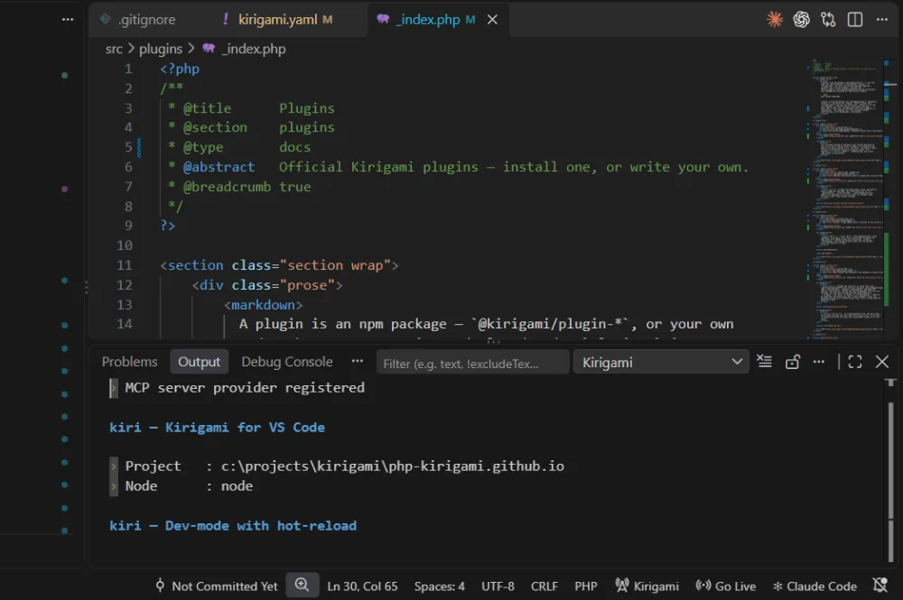

VS Code extension
Create, validate, build, export, run scripts and preview a Kirigami site from the Command Palette and the status bar, without a terminal.
Overview
The Kirigami extension for VS Code (php-kirigami.kirigami-vscode) runs the same engine as the CLI, from inside the editor. It adds a Kirigami category to the Command Palette, a status bar item that runs the dev server, and a Kirigami Output channel laid out like the kiri output and coloured for readability.
It activates in any workspace whose root holds a kirigami.yaml, and reloads the project whenever that file changes. Every official template recommends it in .vscode/extensions.json, so VS Code offers to install it when you open a new project.
Install
Get it from the Visual Studio Marketplace, or search for Kirigami in the Extensions view (Ctrl+Shift+X). From a terminal:
code --install-extension php-kirigami.kirigami-vscode
The package is built per platform, so VS Code picks the right one for your system. The requirements are below.
What it can do
| You want to… | Use |
|---|---|
| Start a new site, without a terminal | Create Project… |
| Check your configuration | Validate kirigami.yaml |
| Render the site once | Build |
| Produce the deployable folder | Export |
| Run a maintenance script | Run Script… |
| Write with a live preview | Toggle Dev Server (or the status bar) |
| See what the engine did | The Kirigami Output channel |
The extension runs the engine directly through its Project API in a dedicated Node process. It does not shell out to kiri and does not go through MCP, and it ships the engine with it: you do not need to npm install anything for the extension itself to work.
Create a project
Kirigami: Create Project… works in any window, even without a folder open. A native wizard asks for:
- The folder to create the site in.
- An official template (the same list as Templates).
- The project's details: name, description, author, email, base URL and repository.
- Whether to initialise git (with a first commit) and to run npm install.
The new project opens as soon as it is ready: in the current window when none was open, in a new window otherwise, or as a reload when it is the folder you already have open. Existing files are never overwritten.
Commands
| Command | What it does |
|---|---|
| Kirigami: Create Project… | Scaffold a new site from an official template, then open it. Available in any trusted window. |
| Kirigami: Build | One development build, like kiri build. |
| Kirigami: Export | Production build into the export folder (dist/ by default), like kiri export. |
| Kirigami: Run Script… | Pick one of the project's scripts/*.php (or a plugin's script) and run it, like kiri run. |
| Kirigami: Validate kirigami.yaml | Check the configuration against the schema. |
| Kirigami: Toggle Dev Server | Start or stop the live-reloading dev server, like kiri serve. |
Only Create Project is available before a project is loaded; the others appear once the folder holds a kirigami.yaml. A result shows as a notification. A failure shows as an error notification, with the engine's diagnostics in the Output channel. Only a result with success: true produces a success notification.
Dev server and preview
The status bar item, bottom right, shows the server's state:
| State | Meaning |
|---|---|
| Idle | The server isn't running. |
| Running | The server is up; the tooltip shows its URL. |
| Building | A rebuild is in progress. |
| Error | The last rebuild failed; see the Output channel. |
Clicking it builds the project once, starts the server and asks whether to open the preview in VS Code's Simple Browser (beside your code) or in your default browser. Saved changes rebuild and reload the preview on their own: a Sass change swaps the stylesheet without a reload. A failed rebuild never reloads the page, and its diagnostics go to the Output channel. Clicking the item again stops the server, and closing the window cleans it up.
Output channel
Every command and every watcher rebuild is logged to the Kirigami Output channel, laid out like the terminal output of kiri: tasks, produced files, warnings and errors. Open it from the notification or from View, Output, and pick Kirigami in the drop-down.

Settings
| Setting | Default | Description |
|---|---|---|
kirigami.nodePath |
node |
Node.js 24+ executable that runs the engine. Set it when node isn't on your PATH, then restart the extension. |
kirigami.previewPort |
4321 |
Port of the dev server; applies the next time it starts. |
Requirements
- VS Code 1.90 or later, in a trusted workspace: the extension does not run in Restricted Mode, since a site's scripts and plugins execute code.
- Node.js 24 or later with WebAssembly JSPI, installed on the machine. The engine runs in its own Node process, not in VS Code's.
- The extension is published per platform: Windows, Linux and macOS, each on x64 and arm64.
Limits
- One project per window. The extension binds to the first workspace folder; multi-root workspaces aren't supported, because the engine keeps one project per process.
- Installing or removing a plugin doesn't reload the project. Run Developer: Restart Extension Host, or reopen the folder. (Editing
kirigami.yamldoes reload it.) - Export needs a dedicated folder separate from your sources: the engine refuses overlapping paths before running anything.
- There is no MCP registration, tasks integration or diagnostics panel yet; they are on the roadmap.
For site owners, not developers
The extension is for people who build the site. If the person who runs it, a client with a small-business site or a blog, needs to edit text and pictures and publish, without an editor or a terminal, that's Kiri Studio.